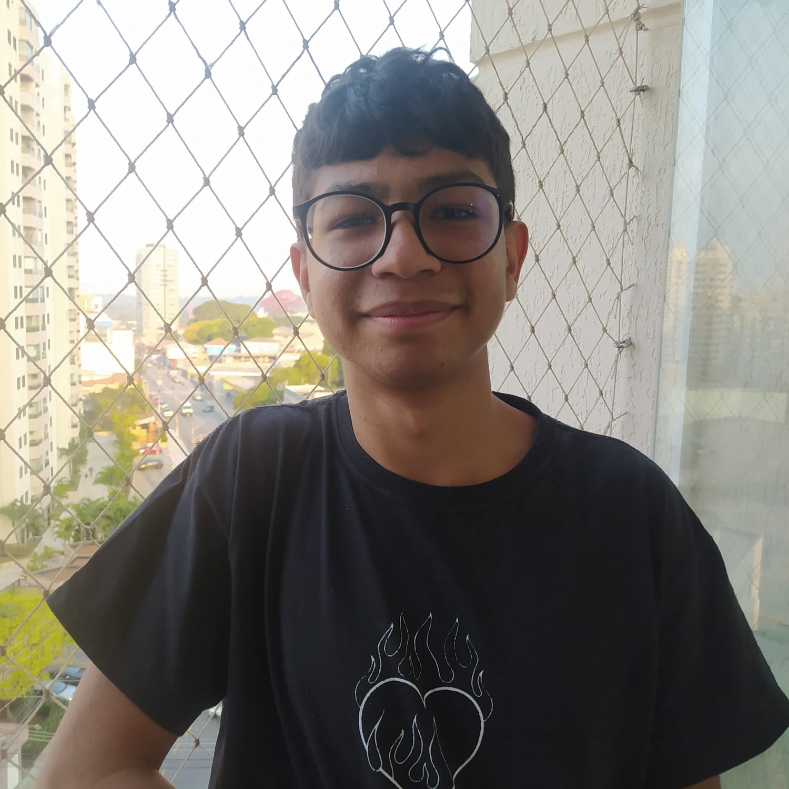

Valter
Criou a pagina Quem-somos e Cadastro

Valter é um jovem talentoso de 15 anos, recentemente aprovado no Instituto Federal de São Paulo (IFSP). Com uma paixão pelo mundo da tecnologia, Valter já domina HTML e possui um bom conhecimento de CSS. Além disso, ele é proficiente no uso de Git e no trabalho com o terminal, habilidades que prometem ajudá-lo a trilhar um caminho de sucesso no mundo da programação e desenvolvimento web.
Desde cedo, Valter mostrou interesse pela tecnologia e pelo mundo digital. Seu conhecimento em HTML e CSS é fruto de muito estudo e prática, permitindo-lhe criar e estilizar páginas web de maneira eficaz. A proficiência no uso de Git e do terminal destaca-se como uma de suas habilidades mais notáveis, facilitando a gestão e controle de versões de seus projetos.
Além de sua dedicação aos estudos e à tecnologia, Valter também é um entusiasta dos esportes. Seu hobby favorito é assistir futebol, onde encontra momentos de lazer e inspiração. Mas seu envolvimento com o mundo digital vai além: Valter já participou de alguns campeonatos de jogos digitais, experiência que lhe proporcionou momentos emocionantes e a oportunidade de desenvolver habilidades estratégicas e de trabalho em equipe.
Com apenas 15 anos, Valter já demonstra um equilíbrio admirável entre suas responsabilidades acadêmicas e seus interesses pessoais. Sua capacidade de conciliar estudos, projetos e hobbies é um exemplo inspirador de determinação e disciplina.
Valter está apenas começando sua jornada, mas já revela um potencial imenso para se destacar em sua carreira e em suas paixões. Com uma curiosidade insaciável e uma vontade incessante de aprender, ele está preparado para enfrentar novos desafios e alcançar grandes realizações. Seu futuro promete ser brilhante, repleto de descobertas e conquistas tanto no campo da tecnologia quanto no universo dos esportes digitais.